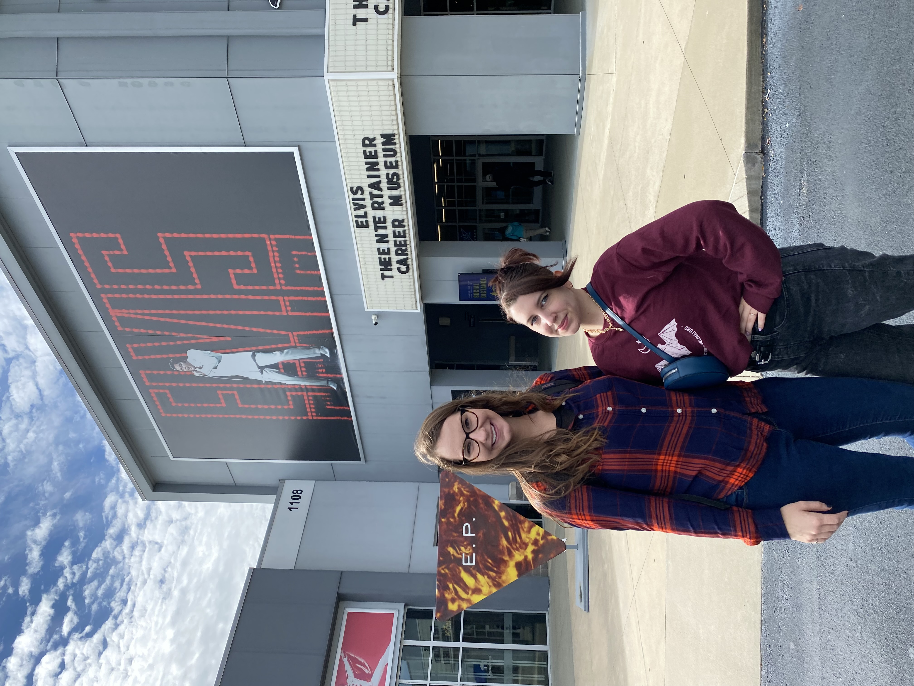
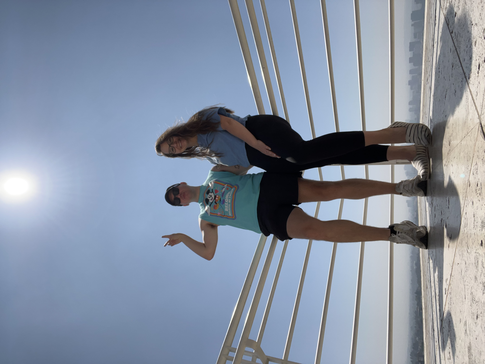
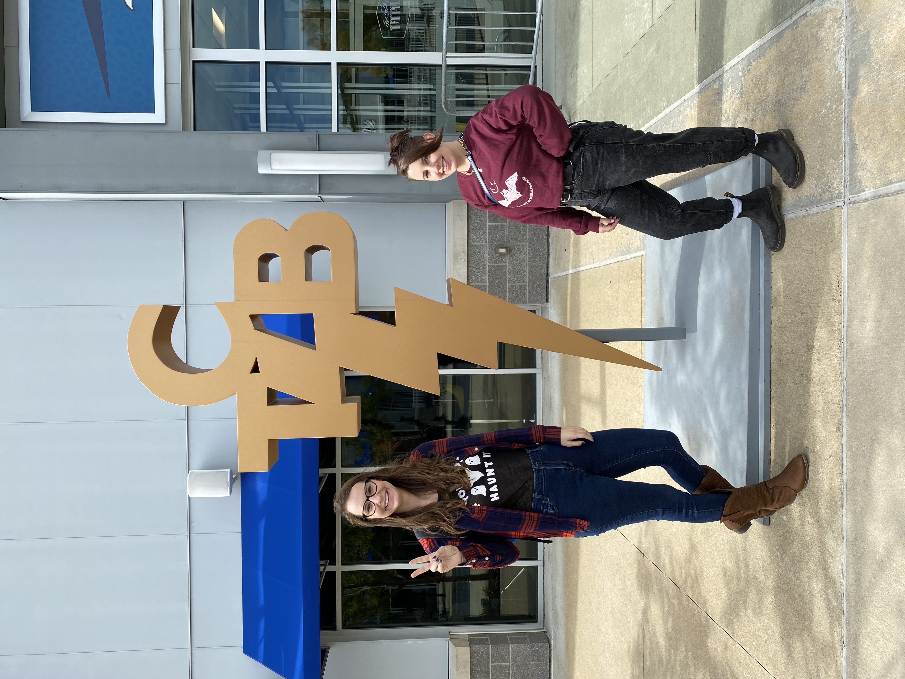
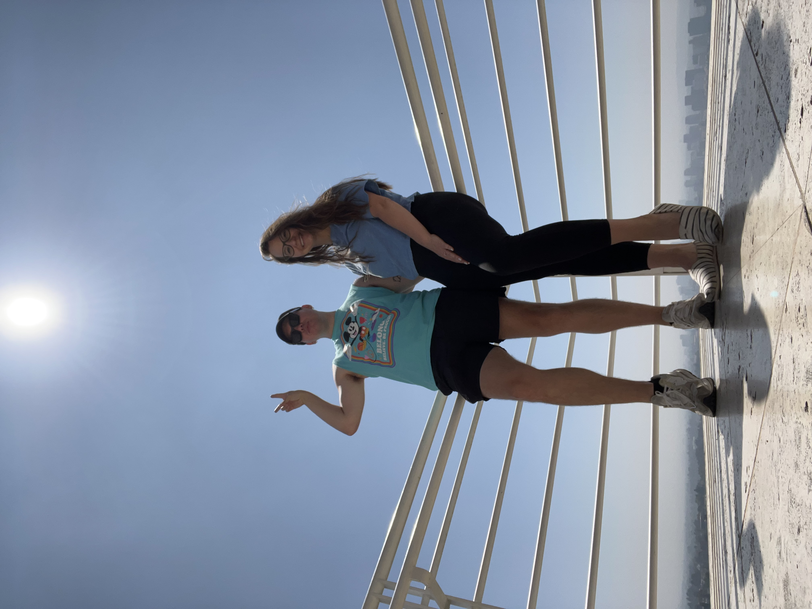
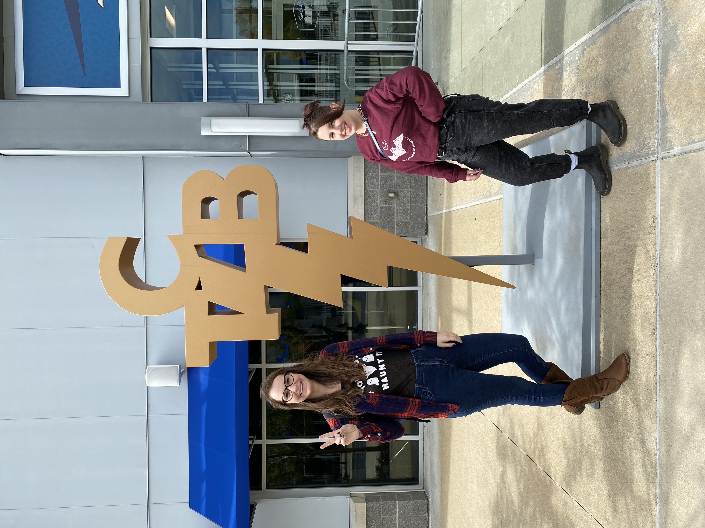
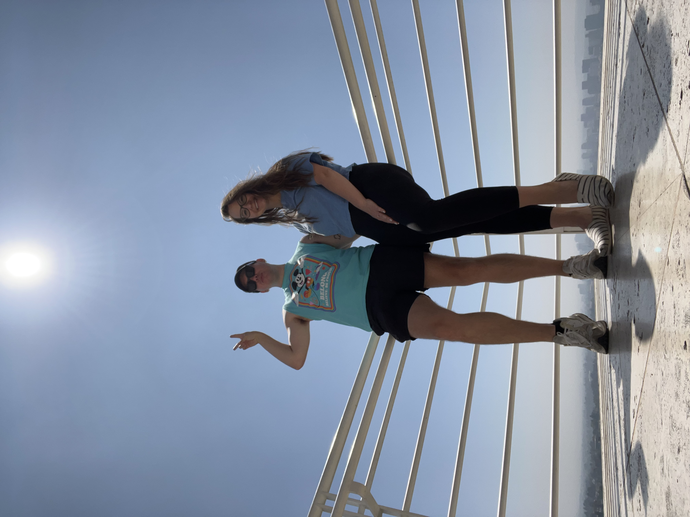
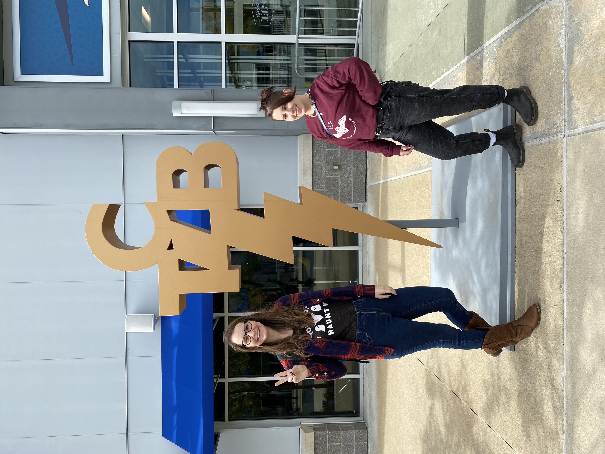
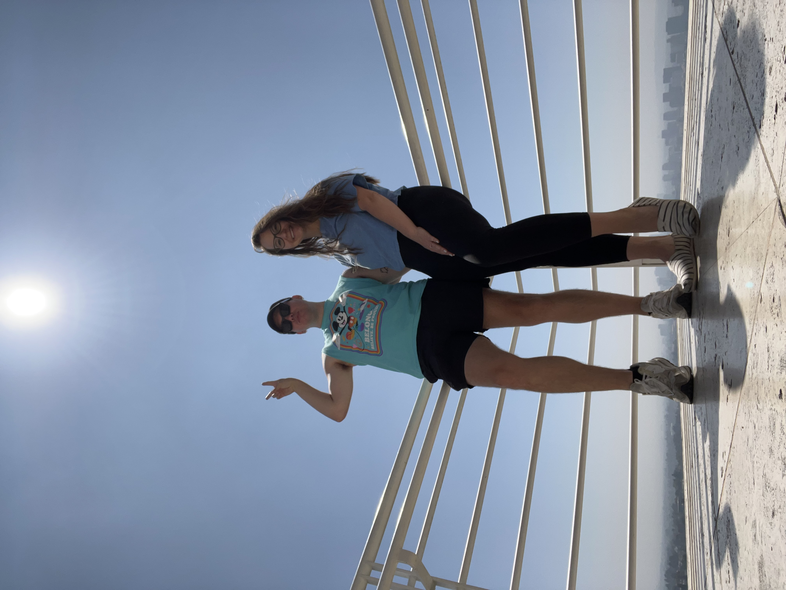
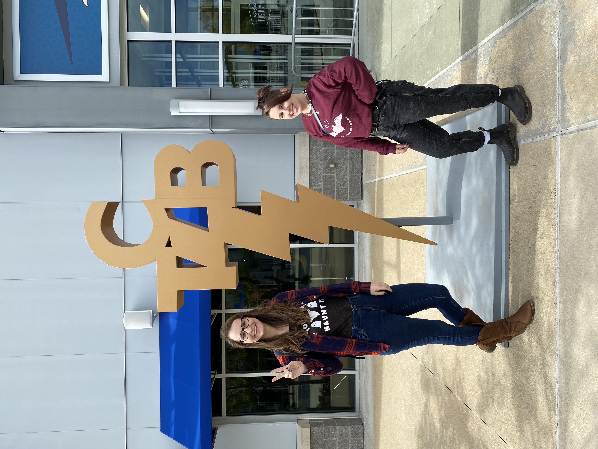

 





Happy Birthday
This year you're Thirty, Flirty and Thriving!


Make me laugh over coffee,
make it a double, make it frothy
so it seethes in our delight.
Make my cup overflow
with your small happiness.
I want to hoot and snort and cackle and chuckle.
Let your laughter fill me like a bell.
Let me listen to your ringing and singing
as Billie Holiday croons above our heads.
Sorry, the blues are nowhere to be found.
Not tonight. Not here.
No makeup. No tears.
Only contours. Only curves.
Each sip takes back a pound,
each dry-roasted swirl takes our soul.
Can I have a refill, just one more?
Let the bitterness sink to the bottom of our lives.
Let us take this joy to go.